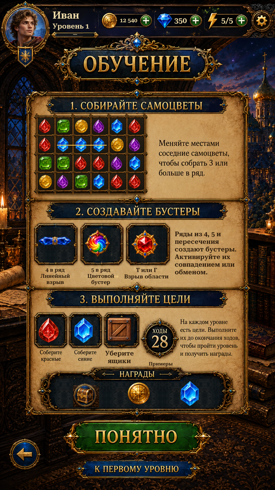

Corrected the panel cleanup masks that painted over gold decoration. Restored the reward surround, title arrows, medallion and card borders from the supplied reference. Two small frame spans hidden by the original Firebird use the adjacent original frame as a donor.
The original Russian reward title and illustrative moves medallion remain intact. English uses a small native caption inside each original label area. Reward icons are inset so they no longer touch the frame. Gameplay gem sprites, shared header, navigation and the rest of the page are preserved.
Unity views are actual Play Mode captures with isolated test saves and simulated display/safe areas. The original and previous implementation are labelled separately. Repaired lacquer/paper and English type remain approximate.

Changes and validation · Remaining reference differences · Verification results · Extracted assets